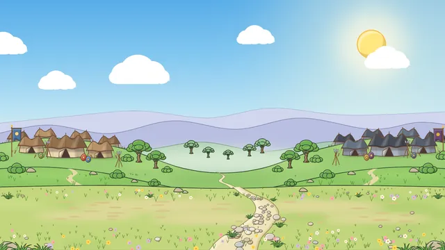
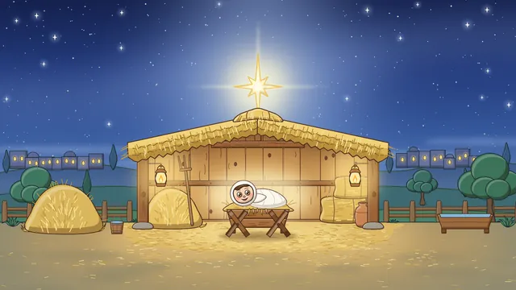
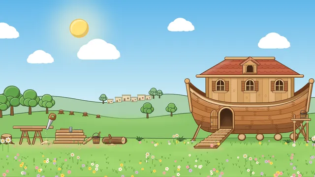
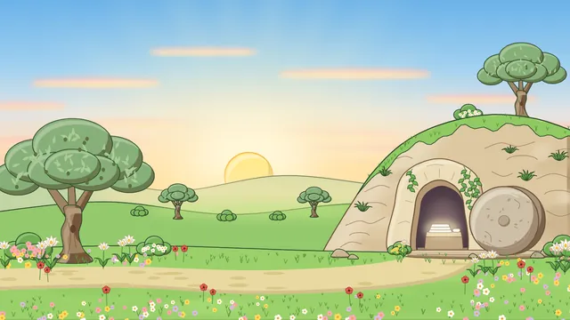

Histórias bíblicas animadas para as crianças da sua igreja
Escolha a história ou conte o que a turma está vivendo. O Ide e os amigos contam, você revisa, e a aula sai com vídeo, versículo e perguntas para conversar.
3 episódios grátis nos 30 primeiros dias. Sem cartão.

Conheça a turma
Em cada episódio o Ide ensina a princesa Eclésia e chama o amigo que combina com a história. É esse amigo quem conta.
- Ideo escudo, ensina
- Eclésiaa princesa, aprende
- Matthewo leão: a realeza de Jesus
- Marko novilho: o serviço de Jesus
- Lukeo cavaleiro: a humanidade de Jesus
- Johna águia: a divindade de Jesus
Da história à aula, em três passos
Escolha a história
Do catálogo da Turma. Ou conte o que a turma está vivendo, como medo, briga ou ciúme, e a Turma escolhe a história da Bíblia que ajuda.
Revise o roteiro
Leia as falas e veja as cenas antes de gerar. Nada vira vídeo sem passar por você.
Dê a aula
Baixe o vídeo e imprima o kit da aula: o versículo para memorizar e as perguntas para conversar. Um link leva o episódio para os pais reverem em casa.
Histórias que a Turma já conta
Ver o catálogo inteiro- Davi e Golias1 Samuel 17Assistir

O nascimento de JesusLucas 2.1-20Criar este episódio
A arca de NoéGênesis 6.9–9.17Criar este episódio
A ressurreição de JesusJoão 20.1-18Criar este episódio
São 30 histórias, do Antigo Testamento à primeira igreja, e você também pode pedir uma passagem.
Planos
Comece de graça, sem cartão. Assine quando a turma pedir mais episódios.
-
Grátis
R$ 03 episódios nos 30 primeiros dias, depois 1 por mês
Assista no app; baixe só os episódios prontos
Com a marca d'água turmadoide.com.br
Começar grátis -
Entrada
R$ 39,90 por mês5 episódios por mês
Baixe os vídeos
Com a marca d'água turmadoide.com.br
Assinar o Entrada -
Professor
R$ 49,90 por mês8 episódios por mês, dois por domingo
Baixe os vídeos
Sem marca d'água
Assinar o Professor -
Avulso
R$ 9,90 por episódioSem assinatura, ou para ir além da cota do mês
Baixe os vídeos
Sem marca d'água
Comprar avulso
Falha nossa não conta na cota. Cancele quando quiser: o plano vale até o fim do mês pago. A assinatura é no cartão de crédito; o avulso, no Pix, no boleto ou no cartão. As regras de cancelamento e reembolso estão nos termos de uso.
Feito para o ministério infantil
Só histórias da Bíblia
A Turma conta o que está no texto bíblico. Não há tema livre nem opinião na boca dos personagens.
Sem dados das crianças
Quem usa é quem ensina: professores, líderes, pastores e pais. As crianças só assistem: não há conta nem tela para elas.
Você revisa tudo
O roteiro é escrito por Turma do Ide, e só vira vídeo depois da sua revisão.